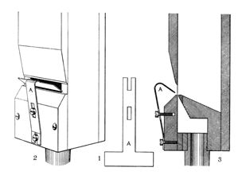

|
Violin English Violine German |
Violino Italian Violon French |
|
Cremona English? |
These names have been used somewhat indiscriminately for stops intended to imitate, or at least suggest, bowed stringed instruments. Audley dates the name Violin as far back as 1688, citing Bernard Smith's organ at Temple Church, London, England. The name Violine was used at least as early as 1722 (see examples below). By contrast, William Thynne's Viole d'Orchestre, arguably the first really successful imitation, was not invented until 1885.
There are other meanings for the names Violon and Cremona. Violino is also a synonym for Octave Violin.
The illustrations are Audsley's; click on them for larger images.
|
Original website compiled by Edward L. Stauff. For educational use only. Violin.html - Last updated 12 April 2005. |
Home Full Index |